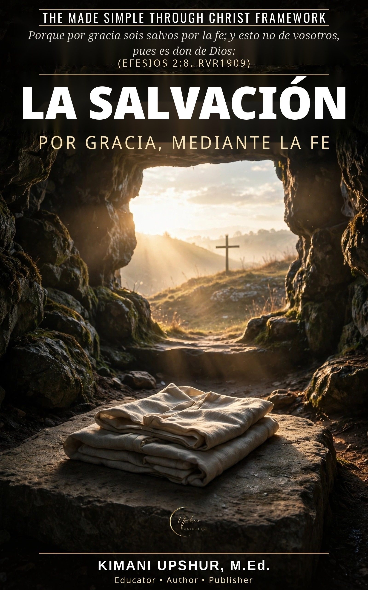

Home / Free Books / La Salvación

En catorce capítulos claros y directos descubrirás
- Lo que la salvación realmente es — y lo que no es
- Por qué necesitamos ser salvados: el problema del pecado
- Lo que Jesús hizo por ti en la cruz: el gran intercambio
- Cree en tu corazón y confiesa con tu boca (Romanos 10:9-10)
- Por gracia mediante la fe, no por obras
- Arrepentimiento y el nuevo nacimiento
- Cómo puedes saber que eres salvo — la seguridad de la salvación
- El bautismo y la vida salvada
- Compartir el evangelio con otros
- La vida eterna empieza ahora
Contenido
- Introducción: La pregunta más importante que jamás responderás
- Capítulo 1: Lo que la salvación realmente es
- Capítulo 2: Por qué necesitamos ser salvados — El problema del pecado
- Capítulo 3: Porque de tal manera amó Dios al mundo
- Capítulo 4: La cruz — Lo que Jesús hizo por ti
- Capítulo 5: Cree en tu corazón y confiesa con tu boca
- Capítulo 6: «Todo aquel que invocare» — La salvación es para todos
- Capítulo 7: Por gracia mediante la fe, no por obras
- Capítulo 8: Arrepiéntete y cree
- Capítulo 9: El nuevo nacimiento
- Capítulo 10: Seguridad — Cómo puedes saber que eres salvo
- Capítulo 11: El bautismo y la vida salvada
- Capítulo 12: Salvado para un propósito — Buenas obras
- Capítulo 13: Compartir el evangelio con otros
- Capítulo 14: La vida eterna empieza ahora
- Apéndice: Respuestas directas sobre la salvación
- Conclusión: Rescatado. Redimido. Restaurado.
- Oración de cierre
- Una invitación personal: Entrega tu vida a Jesucristo